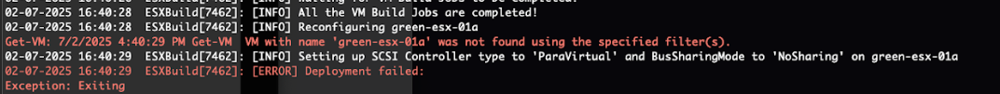

Release Notes
This page documents the key features, enhancements, and capabilities available in Holodeck releases.
Holodeck 9.0.2 – Maintenance Release
Release Date: February 2026
Supported VCF Versions: VCF 9.0.2.0, VCF 9.0.1.0, VCF 9.0.0.0, VCF 5.2.2, VCF 5.2.1, VCF 5.2
Minimum ESX Version: 8.0 U3
What's New
Enhancements
VCF Deployment-related Enhancements
- Added support for VCF 9.0.2.0 deployment
- VCF Installer version 9.0.2.0 can be used to deploy VCF 9.0.0.0, 9.0.1.0 and 9.0.2.0 environments.
- Introduced support for Supervisor deployment in the management domain via the new
-DeploySupervisorMgmtDomainparameter. The previous-DeploySupervisorparameter has been renamed to-DeploySupervisorWldDomain. - Added support for VCF Automation All Apps Org creation as a Day 2 operation.
- New VCF Automation host protection logic added to protect the VCF Automation VM by ensuring no other VM runs on the same nested ESX host in the management domain.
- Added route redistribution for Transit Gateway in Management NSX Edge Cluster for VCF 9.0 by default.
- Introduced dedicated error logging to a separate error file under
/holodeck-runtime/logs/, capturing detailed error diagnostics including stack traces, exception types, and full error records for easier troubleshooting. - Automated HTTPS certificate trust establishment between the VCF Installer and the offline depot, including automated self-signed certificate import, for automated secure depot workflows.
- Added a precheck to ensure the IP provided for the offline depot is present in the depot certificate SAN to avoid trust establishment failures.
- Refactored depot setup code and added support for offline depot setup in provision-only mode.
- Automated bundle download retry on download failure in VCF Installer.
- Automated NSX Edge Cluster certificate expiry bug workaround from KB to prevent deployment failures for VCF 9.0.0.0 and 9.0.1.0.
- Added MasterCIDR validation to ensure only /20 CIDR blocks are used.
- Added guardrail for proxy protocol input — only uppercase (HTTP/HTTPS) is accepted to prevent VCF Installer API failures.
- Listed clusters and datastores alphabetically in pre-checks for easier selection.
- Added error handling for vCenter selected as target with no clusters created.
- Updated additional cluster deployments to use VDS MTU set to 8000.
- Added
allowLegacyCPU=truepersistently to bothboot.cfgandaltbootbank/boot.cfgfor nested ESX hosts for supporting Legacy CPU use case. - Removed default color-based instance naming; InstanceID is now a mandatory parameter in
New-HoloDeckInstance.
Holorouter-related Enhancements
- Bookmarks and Passwords for nested VCF components added to Mozilla Firefox in webtop
- Split DNSMASQ into 3 DNS pods and 1 DHCP pod with CNI networking for improved DNS reliability and scalability on HoloRouter.
- Added AAAA query filtering for single site deployments to prevent DNS resolution timeouts.
- Enhanced service definitions for Webtop and DNSMASQ on HoloRouter.
- Fixed MTU on eth0 to 8000 on HoloRouter to resolve networking issues.
- Updated IP and hostname mappings
Cmdlet Enhancements
- Multi-Version Support: Holodeck now supports VCF 5.2, 5.2.1, 5.2.2, 9.0.0.0, 9.0.1.0 and 9.0.2.0. Please note that you need to upload ESX and VCF Installer (for 9.x) and Cloud Builder Appliance (for 5.2.x) versions in their respective folders at '/holodeck-runtime/bin' in HoloRouter.
New-HoloDeckInstance: The-Interactiveparameter has been removed. Day 2 operations are now handled by the newUpdate-HoloDeckInstancecmdlet. InstanceID is now a mandatory parameter. The-DeploySupervisorparameter has been renamed to-DeploySupervisorWldDomainand a new-DeploySupervisorMgmtDomainparameter has been added for deploying Supervisor in the management domain.Get-HoloDeckInstance: Get details of the nested components deployed via New-HoloDeckInstance commandUpdate-HoloDeckInstance: New cmdlet for performing Day 2 operations on Holodeck, replacingNew-HoloDeckInstance -Interactive. Uses-Site,-VIDomain, and operation-specific flags (-AdditionalClusteror-AddVcfAutomationAllAppsOrg). This release supports deploying an All Apps Org in VCF Automation and deploying additional clusters in the VCF instance.Start-HoloDeckInstance/Stop-HoloDeckInstance: Updated to handle complex deployment types.Stop-HoloDeckInstancenow implements proper power-off operations that gracefully shut down all nested VMs and VCF components in the correct order.Get-HolodeckServiceIPPools: New cmdlet that displays IP pool allocations used by all Holodeck services for easier network troubleshooting.
Bug Fixes
- Applied NSX Image validation workaround for deploying VCF 9.0.0.0 and VCF 9.0.1.0 using the 9.0.1.0 VCF Installer.
- Fixed offline depot authentication bug to properly support authenticated depot access.
- Fixed proxy protocol input in lowercase causing VCF Installer API failures — added guardrail to accept uppercase input only.
- Fixed typecasting bug in pre-check input for cluster and datastore selection when the list contains more than 10 values.
- Fixed developer mode bug for cluster and datacenter selection.
- Fixed state management issues for Day 2 operations.
- Fixed empty depot credentials being passed for HTTP depot configurations.
- Fixed
Set-HoloRouter -DualSiteissue caused by removal of hostname proxy from Site B lab standards. - Fixed DNSMASQ service definition label causing service startup issues.
- Fixed additional cluster deployment workflow and site version selection.
- Fixed occasional issue where nested host NIC would get the wrong type assigned.
- Updated VCF Installer DNS and NTP entries to avoid warnings during deployment pre-checks.
Known Issues
Common Known Issues
- Hosts with memory tiering enabled may cause instability in nested workloads
- vSAN ESA may consume more storage than expected due to nested deduplication/compression behavior
VVF 9.0.0.0 deployment fails when using VCF Installer 9.0.2.0 with 9.0.2 manifest files
Deploying VVF 9.0.0.0 using the VCF Installer 9.0.2.0 fails at the "Generate Workload Domain Runtime Data Model" step in VCF Installer UI with the error:
Failed to generate add workload domain internal model specification
Remediation: Please verify the commonsvcs and domainmanager services are running and retry
This occurs due to a bug in VCF Installer 9.0.2.0 when using 9.0.2.0 manifest. VCF Installer expects vCenter 9.0.2.0 binary even though VVF 9.0.0.0 is being deployed. The installer reports Got 0 install image(s) for product VCENTER and fails to generate the workload domain model.
Workaround
Download the vCenter 9.0.2.0 bundle as well and resume the deployment.
VCF Automation All Apps Org IP Space uses hard-coded CIDR instead of custom CIDR
When deploying the All Apps Org in VCF Automation via the Update-HoloDeckInstance command with a custom MasterCIDR (e.g., 10.2.0.0/20), the IP Spaces created in VCF Automation still use a /28 subnet from the default 10.1.0.0/20 block instead of the custom CIDR. This is because the IP Space CIDR is hard-coded in the config file. Deployments using the default MasterCIDR (10.1.0.0/20) are not affected.
Workaround
-
With PowerShell open and the config loaded in the session, edit the config file:
-
Locate the following key and update the CIDR value to match your custom subnet (e.g.,
10.2.0.32/28):"holodeck-sddc"."Site-A"."vcf-installer-management-domain"."vcfAutomationSpec"."allAppsOrgSpec"."networkingSpec"."ipSpaceCidr"For the workload domain, also update:
-
Save and close the file, then reload the config:
-
Run
Update-HoloDeckInstance— it will use the corrected CIDR range for the IP Space.
Note
If Update-HoloDeckInstance was already run and the All Apps Org constructs were created with the incorrect CIDR, you must first delete the existing constructs in VCFA (org, region, IP space, external connection) and empty the state file before re-running the command:
Clear all contents, save and close, then run Update-HoloDeckInstance again.
VCF 5.2.x deployments fail at Sync-HolodeckComponents with 'No route to host' error
All VCF 5.2.x deployments (single site and dual site, management-only and full stack) complete the VCF deployment successfully, but the Holodeck script fails at the final Sync-HolodeckComponents step with an error such as:
or for dual site:
This happens because Sync-HolodeckComponents attempts to query VCF Operations to sync instance details, but VCF Operations is not deployed in VCF 5.2.x environments. The VCF deployment itself completes without issues.
Workaround
This error can be safely ignored — the VCF 5.2.x environment is fully deployed and functional.
Holodeck 9.0.1 – Maintenance Release
Release Date: October 2025
Supported VCF Versions: VCF 9.0.1.0, VCF 9.0.0.0, VCF 5.2.2, VCF 5.2.1, VCF 5.2
Minimum ESX Version: 8.0 U3
What's New
Enhancements
- Added support for VCF 9.0.1.0, including bypassing vSAN ESA check in VCF Installer and SDDC Manager.
- Updated CPU requirements for VCF Automation with vSAN ESA (min. 32 vCPUs) and vSAN OSA (min. 24 vCPUs).
- Added the capability to use custom VLAN ranges (sequential per site) for Holodeck and the users can specify the start of the custom VLAN range while deploying Holodeck
- Added the capability to use custom DNS domain for Holodeck by specifying it while deploying Holodeck
- Enabled vCLS Retreat Mode for 9.0 clusters by default.
- Custom vSAN HCL now in-built into Cloud Builder and VCF Installer for Dark Site deployments.
- Added user input for offline depot protocol (HTTP/HTTPS) and port flexibility.
- Implemented prechecks for proper offline depot configuration and file availability.
- Ability to select unique port group during prechecks for each site during dual site deployment.
- Reduced the boot time for HoloRouter VM
- Bumped up the resources on HoloRouter - it now uses 4 vCPUs and 8GB of memory
- Enhanced support for special characters in target host credentials.
- Improved cluster selection logic for vCenter targets with multiple folder levels.
- Added support for partial host commissioning during workload domain creation retries.
- Implemented additional guardrails for target disconnections to prevent errors.
- Improved idempotency for NSX Edge Cluster deployment retries.
- Introduced case sensitivity for input parameters to avoid issues.
- Improved error handling and cleaner code exits.
- Reduced CIDR size for VPC from /24 to /28 to free up IPs.
- Completed coverage for developer mode.
- Added error handling for unsupported targets (standalone ESX managed by vC).
- Provided default username and password values for optional offline depot authentication.
- Removed misleading "must support https" message from offline depot input.
- Improved idempotency for New-HolodeckNetworkConfig cmdlet
- Added access to HoloRouter's /holodeck-runtime/specs/ folder in webtop
- Moved iptables from startup_script to ip4save to avoid duplicate entries
- Configured HoloRouter to drop all inbound traffic on eth0 except on the ports with services enabled
- Improved error handling for Network Manager
Cmdlet Enhancements
- Multi-Version Support: Holodeck now supports VCF 5.2, 5.2.1, 5.2.2, 9.0.0.0 and 9.0.1.0. Please note that you need to upload ESX and VCF Installer (for 9.x) and Cloud Builder Appliance (for 5.2.x) versions in their respective folders at '/holodeck-runtime/bin' in holorouter.
Remove-HoloDeckInstance: This cmdlet has a new optional parameter to support the automated deletion of the holodeck instance. If not specified, then the instance ID will be captured from the global config file. Also, the prompt for user confirmation is removed; instead, the user will have 15 seconds to abort the operation by pressing any key on the console.New-HoloDeckConfig: This cmdlet now validates the integrity of theconfig.jsontemplate. If the template file’s integrity does not match, the user will see a warning before a new config file is created for the Holodeck instance. Ideally, users are not expected to modify the template config file; however, there may be edge cases where a customer chooses to do so. In such cases, the warning ensures they are informed of the change.Set-HoloDeckDNSConfig: Removed the -update parameter. If the user specifies -DNSRecord, it will create a new record. If the user specifies -SearchDNSRecord and -ReplaceDNSRecord, it will update the DNS record.- DNS Cmdlets: Removed the -ConfigPath parameter from all DNS cmdlets. It will now use the global $config, which means users should ensure HolodeckConfig is imported in the session before running DNS cmdlets
Bug Fixes
- NSX Edge Cluster for Site B was trying to use BGP configuration from Site A. Fixed it to use Site B BGP configuration.
- VCF Installer for Site B was trying to get deployed in an incorrect VLAN. Fixed this.
- If NSX Edge Cluster creation task fails and another task populates in SDDC Manager, initiating retry gets stuck in an infinite loop. Fixed this to look for that specific task in SDDC Manager.
- Missing disconnection from target host was causing PowerCLI to list supervisors on the target sometimes instead of the nested vCenter. This has been fixed by adding a disconnection to target host before checking supervisor.
- Disabling vSAN HCL warning step was showcasing intermittent success and failure due to different object names for the warnings. Added error handling to ensure these errors are not thrown to the user.
- AVN deployment in 5.2 was failing due to an extra parameter being passed internally in the code. This has been fixed. AVN deployment is expected to proceed smoothly.
- Online depot connection check was failing due to incorrect API response expected in the code. This has been fixed. Online depot connection check should pass going forward.
- PreChecks was not looking at a specific cluster for ESX host version validation in case of multiple clusters when vCenter was selected as the target. Fixed this behavior.
- VVF deployment failure due to 4 host entries in spec file instead of 3. Fixed.
- Dual Site VVF data was not properly configured for Site B. Fixed.
- Dual site if executed serially was skipping over Site B deployment due to state management. Fixed.
- Single set of spec files were maintained for Dual site causing file overwrite for Site A. Fixed.
- VCF Installer for Site B needed to be on Site A Untagged-HoL network. Fixed.
- New ESX hosts would get created on retry even if the task had successfully completed in the previous try. Fixed.
- Fixed DNSMASQ configuration to not respond to AAAA queries that caused nslookup commands to time out
- Fixed the bug to point the VCF Installer in site b to use Untagged-HOL network with IP x.x.10.251
- Fixed iptables to not loose SSH and Webtop access on HoloRouter reboot
- Fixed the code to not throw an error when the network manager output file already exists
- Removed old journal logs from HoloRouter
- Fixed the issue in configuring DNSMASQ as primary DNS server in HoloRouter (during Set-HoloRouter) when HoloRouter uses DHCP
- Fixed Proxy FQDN to point to the right IP i.e. x.x.10.129 instead of x.x.1.129
- Fixed the inter-VRF communication by adding l3mdev settings on HoloRouter
- Fixed the rp_filter settings on HoloRouter
- Fixed the NTP and router IP/FQDN mappings used in VCF installer to fix the expected vs found IP warnings while deployment
- Fixed Network Manager not to fail if there are multiple files /etc/systemd/network/ folder
- Fixed Network Manager not to throw an error when the network manager output file already exists
Known Issues
Common Known Issues
- Hosts with memory tiering enabled may cause instability in nested workloads
- vSAN ESA may consume more storage than expected due to nested deduplication/compression behavior
VCF 9.0.x Deployment fails on step 'Validate NSX Install Image is Available'
When deploying VCF 9.0.0.0 or 9.0.1.0, the deployment fails on the step "Validate NSX Install Image is Available" with the error:
NSX install image validation failed for NSX Version - 9.0.2.0.25150386
Remediation: Please download NSX install image with Version - 9.0.2.0.25150386
Workaround
- Download the VCF Installer files for 9.0.2.0 (the ESX version should remain 9.0 or 9.0.1 depending on which version you are deploying).
- Copy the VCF Installer 9.0.2.0 files to the appropriate version folder on the HoloRouter (e.g., the
9.0.1.0folder). - Update
/holodeck-runtime/templates/bom.jsonto reflect the 9.0.2 VCF Installer file names. - Run the VCF deployment again.
Fixed in: Holodeck 9.0.2
Track this issue here: GitHub Issue #89
NSX Edge deployment fails due to expired OVF certificate
NSX Edge Cluster deployment fails with the error "OVF certificate validation failed. Error: [VALIDATION_ERROR: CERTIFICATE_EXPIRED]" in NSX when deploying Edge nodes. This is a known upstream issue documented in Broadcom KB 424034.
Workaround
Follow the steps in Broadcom KB 424034. Note that you may need to enable SFTP on NSX Manager first:
- SSH into the NSX Manager.
- Edit
/etc/ssh/sshd_configand change:- From:
#Subsystem sftp /usr/lib/openssh/sftp-server - To:
Subsystem sftp internal-sftp
- From:
- Restart the SSH service.
- Then proceed with the KB steps to replace the expired certificate.
Fixed in: Holodeck 9.0.2 (automated workaround applied during deployment)
Track this issue here: GitHub Issue #86
VCF Automation deployment hangs or fails with LCMVMSP10002 error
When deploying a full stack with VCF Automation enabled (using -DeployVcfAutomation), the deployment may fail during VCF Automation deployment with a COMPLETED_WITH_FAILURE status or an LCMVMSP10002 error code. The deployment may then hang indefinitely while retrying, showing repeated messages like:
[INFO] Current task in progress: Retrieve the status of VCF Automation Deployment request
[INFO] Management Domain is not ready yet. Sleeping for 5 mins
Troubleshooting Steps
- Log in to VCF Operations > Fleet Management > LifeCycle. On the right pane, check VCF Management > Tasks for the VCF Automation task and review any specific errors.
- SSH into the VCF Installer and review
/var/log/vmware/vcf/domainmanager/domainmanager.logfor detailed error information. - Ensure you have sufficient physical resources — VCF Automation requires a minimum of 24 vCPUs (vSAN OSA) or 32 vCPUs (vSAN ESA).
- Retry the deployment by running the
New-HoloDeckInstancecommand again.
Track this issue here: GitHub Issue #91, GitHub Issue #79
Valid cluster choice returns 'Enter a valid option' when more than 10 clusters exist
During pre-checks, if the target vCenter has more than 10 clusters, selecting any cluster number may return the error "Enter a valid option" due to a type mismatch between the string input and integer comparison.
Workaround
Cast the cluster choice input to an integer in the validation logic:
while(($cluster_choice -notmatch "^\d+$") -or ([int]$cluster_choice -lt 1) -or ([int]$cluster_choice -gt ((Get-Cluster).Count))){
And update the cluster/datacenter selection:
$cluster = $cluster_report[[int]$cluster_choice - 1].Clustername
$data_center = $cluster_report[[int]$cluster_choice - 1].DCname
Fixed in: Holodeck 9.0.2
Track this issue here: GitHub Issue #77
Developer mode does not work with vCenter as target
When using developer mode with environment variables and a vCenter as the deployment target, cluster and datacenter selection fails with the error:
Cannot convert the "" value of type "System.Management.Automation.PSCustomObject" to type "VMware.VimAutomation.ViCore.Types.V1.Inventory.VIContainer"
This occurs because $env variables are not correctly dereferenced during cluster and datacenter filtering.
Workaround
Update the cluster/datacenter selection in the pre-check logic to directly use the environment variable values:
Fixed in: Holodeck 9.0.2
Track this issue here: GitHub Issue #78
HoloRouter becomes unresponsive during deployment
In some environments, the HoloRouter VM may become unresponsive during deployment — SSH, console access, and Webtop stop working, and VMware Tools stops reporting as running. This appears to be related to high I/O load on the HoloRouter.
Workaround
If the HoloRouter becomes unresponsive, try power-cycling the HoloRouter VM from the vCenter/ESX host UI and resuming the deployment. Ensure the HoloRouter VM has adequate resources (Holodeck 9.0.2 increased the default to 4 vCPUs and 8 GB memory).
Track this issue here: GitHub Issue #84
DNS resolution fails in dual-site deployment
In dual-site deployments, ESX hosts may receive the subnet gateway IP as their DNS server instead of the correct Holodeck DNS server IPs (e.g., 10.x.168.129). DNS resolution from the ESX management network fails, and the Holodeck DNS IP may be unreachable.
Important: The -MasterCIDR parameter must be a /20 CIDR block. Using other sizes (e.g., /16) is not supported and will cause DNS and networking issues.
Workaround
Ensure that all CIDR inputs use a /20 block size as documented. If you have already deployed with an incorrect CIDR, redeploy using the correct /20 CIDR.
Fixed in: Holodeck 9.0.2 (enforced to allow only /20 CIDR as input)
Track this issue here: GitHub Issue #85
NSX Edge deployment fails due to insufficient memory on nested hosts
NSX Edge Cluster deployment may fail when nested ESX hosts do not have sufficient memory to accommodate Edge node VMs. This can occur even on physical hosts with large amounts of RAM (e.g., 1.25 TB) if the nested host memory allocation is too low.
Workaround
Increase the RAM allocation for nested ESX hosts in the Holodeck configuration:
- Edit the config template at
/holodeck-runtime/templates/config.json. - Increase the management and workload host memory from 80 GB to 128 GB (or as needed).
- Redeploy the Holodeck instance.
Track this issue here: GitHub Issue #87
VCF 5.2 Edge Cluster deployment fails — BGP peering does not establish
When deploying a VCF 5.2 environment and attempting to deploy an NSX Edge Cluster via SDDC Manager, the task fails at "Verify NSX BGP Peering". In NSX CLI, the BGP neighbor state shows as connect rather than established, indicating BGP peering is not working between the T0 router and the HoloRouter.
Workaround
See this community discussion for steps to manually fix BGP peering on the HoloRouter FRR configuration.
Fixed in: Holodeck 9.0.2
Track this issue here: GitHub Issue #56
Holodeck 9.0 – Initial Release
Release Date: June 2025
Supported VCF Versions: VCF 9.0, VCF 5.2.x
Minimum ESX Version: 8.0 U3
What's New
Enhancements
- Support for both VCF 9.0 and VCF 5.2 deployments from a single toolkit
- vSAN ESA and OSA deployment options
- New VVF deployment mode (VMware vSphere Foundation)
- Proxy support for online/offline depot workflows
- Enhanced PowerShell cmdlets with modular support:
New-HoloDeckConfig,New-HoloDeckInstance,Start-HoloDeckInstance,Stop-HoloDeckInstance- Option to deploy greenfield VCF environments with provision-only mode
Known Issues
Common Known Issues
- Hosts with memory tiering enabled may cause instability in nested workloads
- vSAN ESA may consume more storage than expected due to nested deduplication/compression behavior
Online Depot Check Failure: ConvertFrom-Json: Cannot bind argument to parameter 'InputObject' because it is null.
If you're using the online depot route for VCF Installer configuration, there is a known issue where the final validation step fails due to a mismatch between the API response format expected by Holodeck and the actual output from VCF Installer.
27-06-2025 00:43:32 SddcMgmtDomain[63248]: [INFO] Setting up depot for VCF Installer
27-06-2025 00:43:32 SddcMgmtDomain[63248]: [INFO] Depot Type selected: online
27-06-2025 00:43:34 SddcMgmtDomain[63248]: [ERROR] Depot connection failed.
ConvertFrom-Json: Cannot bind argument to parameter 'InputObject' because it is null.
Exception: Exiting
Workaround
- Login to the VCF Installer UI via Webtop
(typically athttps://10.1.10.250unless a custom CIDR was used) - Check if the depot is already configured successfully
- If confirmed, navigate back to PowerShell and run:
- Find and manually update the section:
- Change
"Status": "InProgress"to"Status": "Success"to unblock the process. - Run
New-HoloDeckInstancecommand again to pick up from where it failed.
Fixed in: Holodeck 9.0.1
Track this issue and future fix here: GitHub Issue #1
Why did VM deployment fail with 'VM with name not found using the specified filter(s)'?

This issue can occur if the portgroup used by vCenter for VM placement is an uplink portgroup.
Uplink portgroups are static and do not have available ports for VM deployment, which causes Holodeck to fail during the VM provisioning step.
{kind=link}
Symptoms:
- Error: VM with name 'green-esx-01a' was not found using the specified filter(s)
- Deployment halts with: [ERROR] Deployment failed
When does this happen? - Environments with multiple vSphere Distributed Switches (vDS) configured in the same vCenter. - The VM placement logic accidentally targets an uplink portgroup.
Workaround: - Create a test portgroup in the same vDS with default settings (non-uplink, ephemeral or static binding). - Retry the Holodeck deployment process.
Track this issue and future fix here: GitHub Issue #10
Users lose Webtop, SSH and ping access to Holorouter on rebooting Holorouter
Reason: Some of the iptables rules on HoloRouter aren't persistent across reboots
Impacted Services: SSH, Ping, and Webtop; None of the other Holodeck infrastructure services should have any impact due to this bug.
Workaround:
-
If you haven't rebooted the HoloRouter yet but are planning to, run the following command before rebooting it -
-
If you've already rebooted the HoloRouter, since you don't have SSH access, log into the HoloRouter console in the vCenter/ESX host and run the following commands -
iptables -D INPUT -i eth0 -j DROP
iptables -A INPUT -i lo -j ACCEPT
iptables -A INPUT -m conntrack --ctstate RELATED,ESTABLISHED -j ACCEPT
iptables -A INPUT -p tcp -m tcp --dport 22 -j ACCEPT
iptables -A INPUT -i eth0 -p icmp -j ACCEPT
iptables -A INPUT -i eth0 -p tcp -m tcp --dport 22 -j ACCEPT
iptables -A INPUT -i eth0 -p tcp -m tcp --dport 30000 -j ACCEPT
iptables -A INPUT -i eth0 -j DROP
Fixed in: Holodeck 9.0.1
Track this issue and future fix here: GitHub Issue #12
DNS requests timeout due to AAAA query forwarding to upstream DNS server
DNS resolution for Holodeck-managed systems (e.g., nslookup vc-mgmt-a.site-a.vcf.lab) returns the correct IP address but then times out with communications error and SERVFAIL messages. This is caused by DNSMASQ forwarding AAAA (IPv6) queries to the upstream DNS server, which may not handle them properly. Since IPv6 is disabled on HoloRouter, AAAA queries are unnecessary.
This can cause Management Domain deployment failures when SDDC Manager tries to create certificates and cannot resolve FQDNs in a timely manner.
Workaround
Add AAAA query filtering to DNSMASQ on HoloRouter:
$dnsmasq_config = Get-Content -Path /holodeck-runtime/dnsmasq/dnsmasq_configmap.yaml | ConvertFrom-Yaml
$dnsmasq_config.data."dnsmasq.conf" += "`nfilter-AAAA"
$dnsmasq_config | ConvertTo-Yaml | Set-Content -Path /holodeck-runtime/dnsmasq/dnsmasq_configmap.yaml
kubectl apply -f /holodeck-runtime/dnsmasq/dnsmasq_configmap.yaml
kubectl delete -f /holodeck-runtime/dnsmasq/dnsmasq_deployment.yaml
kubectl apply -f /holodeck-runtime/dnsmasq/dnsmasq_deployment.yaml
Fixed in: Holodeck 9.0.1
Track this issue here: GitHub Issue #16
HoloRouter configuration fails when using DHCP: 'Adding DNSMASQ server as the default DNS Server' error
When the HoloRouter is configured with DHCP (instead of a static IP), the Set-HoloRouter step fails at "Adding DNSMASQ server as the default DNS Server" with Exception: Exiting. This occurs because the DNS configuration logic does not properly handle DHCP-based network setups.
Workaround
Configure the HoloRouter with a static IP address instead of DHCP before running New-HoloDeckInstance.
Fixed in: Holodeck 9.0.1
Track this issue here: GitHub Issue #7
AMD EPYC processor incorrectly identified as deprecated Naples/Zen 1st Gen
The CPU deprecation check during pre-checks incorrectly identifies newer AMD EPYC processors (e.g., EPYC 7643 — Milan/Zen 3rd Gen) as deprecated AMD EPYC 7001 Series (Naples/Zen 1st Gen). This is a cosmetic issue caused by pattern matching on the EPYC 7 prefix rather than correctly checking the generation digit in the model number.
Workaround
The deprecation warning can be safely ignored if you know your CPU is a supported generation (2nd Gen or later). The deployment will still proceed.
Fixed in: Holodeck 9.0.1
Track this issue here: GitHub Issue #9
Deployment of VCF Installer fails when target cluster is in a host folder hierarchy
When deploying to a vCenter where the target cluster exists inside a host folder hierarchy (e.g., Datacenter > Host Folder > Cluster), the VCF Installer OVF deployment fails with:
The code assumes the cluster exists directly under the Datacenter object and does not traverse folder hierarchies.
Workaround
Manually modify the VcfInstaller.psm1 module to build the full cluster path including host folders. See GitHub Issue #18 for the recommended code change.
Fixed in: Holodeck 9.0.1
Track this issue here: GitHub Issue #18
SDDC Manager deployment fails in a loop when -Site parameter uses uppercase letters
When the -Site parameter is passed with an uppercase letter (e.g., -Site A instead of -Site a), the domain FQDN contains an uppercase character (e.g., site-A.vcf.lab). SDDC Manager does not accept uppercase letters in the FQDN, causing the deployment to enter a loop where the SDDC Manager VM is repeatedly deployed, started, and deleted.
Workaround
Always use lowercase for the -Site parameter (e.g., -Site a, -Site b).
Fixed in: Holodeck 9.0.1
Track this issue here: GitHub Issue #24
NSX install image validation fails when deploying VCF 9.0.0.0
When deploying VCF 9.0.0.0 using the VCF Installer 9.0.0.0, deployment fails on the "Validate NSX Install Image is Available" step. This is caused by a manifest mismatch in the VCF Installer where it expects an NSX version that doesn't match the downloaded bundle.
Workaround
Use VCF Installer 9.0.1.0 (instead of 9.0.0.0) to deploy VCF 9.0.0.0, as updated in the official VCF Bill of Materials.
Fixed in: Holodeck 9.0.1
Track this issue here: GitHub Issue #53
Reporting Issues
To raise issues, feature requests, or provide feedback, please visit the Holodeck GitHub repository.